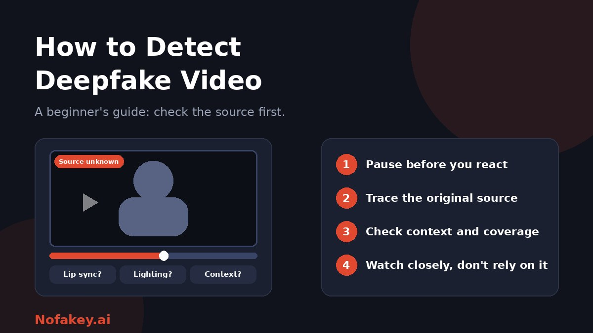

A video lands in your messages: a politician says something shocking, a celebrity endorses a strange product, a relative asks for help. It looks real and sounds right. If you are new to deepfakes, you might wonder what to look for. The honest beginner's answer is that the best clues are not in the pixels. They are in where the video came from and whether anything else supports it. This guide walks you through a simple routine.
What counts as a deepfake video?
A deepfake is a video that has been generated or changed with AI so that it misrepresents a person, action or event. Not all of them are fully fabricated.
| Type | What it is |
|---|---|
| Face swap | One person's face replaces another's in real footage |
| Voice or lip-sync swap | Real video with a cloned voice and re-timed lips, so the person appears to say new words |
| Fully generated video | A scene or person created from a text prompt or a few images |
| Live deepfake | A face or voice altered in real time on a call |
| "Cheapfake" | Real footage that is misleadingly edited, slowed, cropped or given a false caption, with no advanced AI needed |
Cheapfakes are worth knowing about because they are common and easy to catch with context checks, which beginners can do without any special skill.
A simple routine for beginners
- Pause. Strong feelings such as anger, fear or excitement are what fakes are designed to trigger. Do not react or share yet.
- Ask three questions: Who posted this? Why might they want me to see it? What do they want me to do next?
- Trace the source. Look for the earliest upload and the original account. A clip with no clear origin, or re-uploaded by anonymous pages, is a warning sign.
- Check context. Does the date, place, clothing, weather and language fit the claim? Are reliable outlets reporting the same event? A major real event rarely appears in only one place.
- Watch it closely. Use the clues in the next section, but treat what you find as hints.
- Look for labels and provenance. Some platforms add labels, and some files carry content credentials. Their presence can help, but their absence proves nothing, since platforms often strip this information.
- Try a detector as one more clue, if you like. See the limits below.
- Decide. If you cannot confirm it from independent sources, treat it as unverified and do not share it.
Visual and audio clues, and why to treat them carefully
Watch the video full-screen and replay it, slowing it down if you can. Look away from the main action and study the edges.
| What to check | What might show up | How far to trust it |
|---|---|---|
| Lip sync | Mouth shapes that do not quite match the words | Low to moderate. Poor connections cause this too |
| Eyes and blinking | Staring, odd blink patterns, flat gaze | Low. Newer tools handle this well |
| Face edges and hair | Blurring or flickering where the face meets hair, neck or background | Moderate for weaker fakes |
| Skin and teeth | Waxy skin, teeth that blur or do not change with the mouth | Low to moderate |
| Lighting and shadows | Shadows or reflections that do not match the scene or glasses | Moderate |
| Hands and objects | Odd fingers, objects that warp when passing the face | Low to moderate. Improving fast |
| Background | Warping, repeated patterns, text that changes | Moderate |
| Voice and audio | Flat emotion, odd pacing, missing breaths, room sound that does not match the scene | Low. Cloned voices can sound natural |
| Continuity | Age, clothing or surroundings that change between cuts | Moderate |
Good deepfakes may show none of these, and real videos can show several because of heavy compression, filters or bad lighting. That is why source and context come first. For the same advice applied to live calls, see how to verify a person on a video call is real.
Context checks anyone can do
- Search for the claim in words. Search for what the video supposedly shows, with names and place, and see what reliable sources say.
- Check the person's official channels. If someone supposedly said something major, they or their organisation usually address it.
- Grab a few still frames and run a reverse image search to find earlier versions of the footage. See how journalists verify images for the method.
- Check the date. Old footage is often recycled with a new caption.
- Read the comments with care. Sometimes someone has already pointed out the original source, but comment sections can also be filled with bots.
- Ask the sender. If a friend sent it, ask where it came from.
What about deepfake detector tools?
Many online tools claim to detect deepfake video. Independent tests and experience show they can be inconsistent: they sometimes miss obvious fakes and sometimes flag genuine videos. Compression, low resolution and re-uploads make their job harder. If you use one:
- Treat the result as a clue, never a verdict.
- Try more than one method, and note when they disagree.
- Be careful about uploading private or sensitive videos to free tools.
- Install browser extensions only from official stores. See the fake AI browser extension update scam.
For the wider problem with AI detection, read are AI detectors accurate? and AI watermark detection.
Common beginner mistakes
- Trusting a gut feeling. A video that "feels real" can still be fake, and vice versa.
- Relying on one clue. Odd blinking alone proves little.
- Assuming a detector settles it. It is one clue.
- Judging by quality. A blurry video is not more likely to be real or fake.
- Sharing "just in case" or to ask if it is real. Sharing spreads it before it has been checked.
- Forgetting cheapfakes. Many misleading videos are real clips with a false story attached.
Talking to family, teens and children
- Teach the routine, not the tells: pause, check the source, find other coverage, then decide.
- Agree a family safe word for urgent requests, in case someone clones a relative's face or voice. See what a deepfake is and how to protect yourself.
- Make it safe to ask. Children and teens should know they can tell a trusted adult about any video that frightens them or involves them, without getting into trouble.
- For teachers, see how to teach students to spot AI content.
If you find a deepfake
- Do not share it, even to warn people, since reposts spread it further. Describe it in words instead.
- Save the link and evidence: the address, account name, date and a screen recording.
- Report it to the platform using its impersonation, misleading media or harassment tools.
- Warn the people affected, including the person shown, if you know them.
- If it involves fraud, money requests or threats, contact your bank if needed and report to your local police or national fraud reporting service.
- If it involves intimate images, especially of a minor, do not forward it. Report it to the platform and the authorities, and support the person affected.
If a link or message that came with the video looks suspicious, paste it into our free checker for a quick first read.
Conclusion
You do not need to be an expert to handle deepfake video well. Pause, trace the source, check the context, and use visual clues and tools as hints rather than proof. If you cannot verify a clip, treat it as unverified and keep it to yourself. Find more guides on the Nofakey.ai blog.
Frequently asked questions
What is the easiest way to detect a deepfake video?
Check the source and context before studying the pixels. Find the original upload, see whether reliable outlets report the same event, and confirm with the person or organisation involved. Visual clues are only a bonus.
Can you spot a deepfake just by looking?
Not reliably. Clues like odd blinking, lip sync problems or lighting mismatches can appear in weaker fakes, but good fakes may show none, and real videos can show some of them because of compression or filters.
Do deepfake detector tools work?
They can help but make mistakes in both directions, and results vary between tools and videos. Treat them as one clue and combine them with source and context checks.
What is a cheapfake?
A cheapfake is real footage that is misleadingly edited, slowed down, cropped or given a false caption, with no advanced AI needed. Checking the original source and context catches many of these.
What should I do if I find a deepfake video?
Do not share it, save the link and evidence, report it to the platform, warn people who might be affected, and report to the authorities if it involves fraud, threats or intimate images.
Got a suspicious video link or message to check?
Run it through the checker